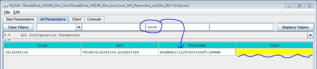
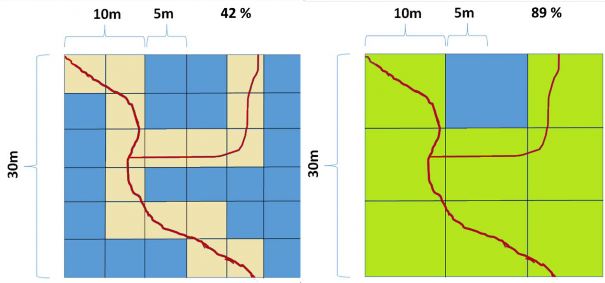
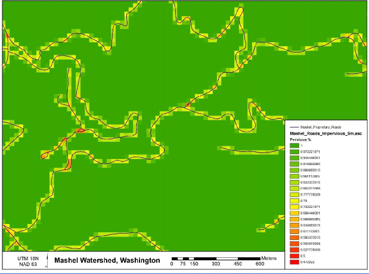
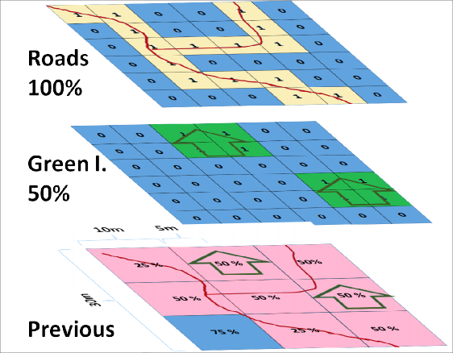
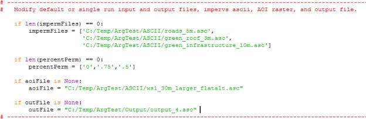

+
E.1 | Mapping Surface Layer Permeabilities
Overview (Tutorial E.1 - Mapping Surface Layer Permeabilities)
Permeability of surface layers is an important property affecting infiltration of rainfall and surface runoff and accompanying dissolved contaminants and nutrients.
This document describes how to parameterize VELMA's non-soil surface layer to represent the degree of permeability of overlying human structures (roads, roofs, compacted soils, etc.) and natural features (surficial bedrock, etc.) to water and dissolved chemicals.
1.0. Permeability Basics
The VELMA simulator engine allows specification of a spatial data map (grid) with permeability fractions as its cell values. When specified, the grid's permeability fractions are included in determining how much of a cell's total water inflow (from rain, snow melt, lateral surface movement, etc.) penetrates into the first layer of its layered soil column.
Permeability fraction values must be in the range [0.0, 1.0], where 0.0 is completely impermeable (no water penetrates from surface to soil layer 1) and 1.0 is completely permeable (all water penetrates from surface to soil layer 1).
1.1. Permeability Values Are Not Required by the VELMA Simulator
Permeability is not the sole factor determining how much water penetrates from surface into the first soil layer. The soil layer's saturation, porosity and other parameters determine the primary amount of water transferred from surface to the layer. A cells permeability fraction is a secondary factor that may further reduce the primary amount.
When a VELMA simulation configuration does not specify a permeability grid, the VELMA simulator engine behaves as if every cell has a permeability of 1.0 - i.e. no secondary reduction of the penetration water amount occurs.
1.2. Specify Permeability Values for Each Simulation Grid Cell in a Permeability Map File
The permeability grid map must be a Grid ASCII (.asc) file with the same header data as the DEM .asc file specified for the simulation configuration. The permeability grid file's data values must be floating point numbers, each one within the range [0.0, 1.0].
1.3. Specify the Simulation's Permeability Map File via a Configuration Parameter
Set the permeability fractions for the cells of the grid by providing the name of the permeability .asc map file as the value of the permeabilityFractionsFileName Calibration parameter.
You can find this parameter by entering "^perm" (without the double-quote marks) into the middle
filter text box on JVelma's "All Parameters" panel, like so:
The Value for the permeabilityFractionsFileName parameter must be the name of an existing, accessible, valid Grid ASCII (.asc) file containing permeability fractions. If the Value provided is a fully- qualified path, the simulator will look for the .asc file at that location, with that filename. If the Value provided is a partial path or only a file name, the simulator will look for a file with specified name relative to the location specified by the inputDataLocationRootName/inputDataLocationDirName parameters.
2.0. How to Establish Pervious Surfaces for a VELMA Application
2.1. Data Sources
Washington Transportation, Proprietary Roads (Statewide) - https://data- wadnr.opendata.arcgis.com/documents/wadnr-active-roads-download/about
- Washington State Department of Natural Resources (WA DNR)
- National Elevation Dataset (30m) (DEM) - Flat processed by JPDEM
- U.S. Geological Survey, The National Map, 2015, 3DEP products and services
2.2. Data Processing
A fractional pervious surface map is created by using a combination of impervious layer map(s) and an area of interest (AOI) DEM. The pervious surface maps permeability percent values will range from 0 to 1, where 0 completely impervious and 1 being completely pervious. Layers such as road polylines or raster green infrastructures are converted to a user resolution that is finer or equal to the resolution of the AOI raster, and must have the exact same extent of the AOI raster. For instance, a user would determine the appropriate road or impervious surface width (10m, 5m, 3m, 2.5m, or 1m etc.), all of which would evenly divide into a 30m processed DEM / AOI ASCII. The AOI raster may be of any resolution, as long as the impervious surface raster evenly divides into it. To illustrate, a 30m AOI that is 50 rows by 100 columns could be evenly divided by a 10m impervious surface ASCII that was 150 rows by 300 columns. When converting polylines, polygons, or rasters, as with all VELMA layers, they must be locked (snap) to the AOI to ensure proper overlap and alignment of higher resolution cells with the AOI.
The perviousness of finer resolution maps will be weighted by their cell size ratio to the AOI DEM when data is aggregated to the AOI map resolution. For example, to derive a 30m cell's fraction perviousness, the number of higher resolution cells that are analyzed as road are summed together and then divided by the total number of cells. That percentage is then subtracted from 1. 1 being completely pervious and 0 entirely impervious. With the scenario drawn in Figure 1, this single 30m cell would evaluate to 1 -
(15 / 36) = 58% or 1 - (8/9) = 11 % perviousness depending on whether a 10m or 5m road grid were used. An example of a processed permeability fraction map can be seen in Figure 2.
Multiple impervious map layers can be aggregated and weighted together to create the permeability map (Figure 3). When calculating the permeability value for a particular cell with multiple overlapping impervious cell values, the layers must be ordered or ranked by precedence of the layer's influence. In figure 3 the "Roads" layer is ranked first and the "Green I." layer ranked last. The "Roads" layer's imperviousness value is 100% and the "Green I." layer's impervious cells values are 50%, and if any cells overlap each other the 100% value from the "Roads" layer will be used to calculate the partial influence of the 10m area that it represents in the permeability map's 30m cell (Figure 3).
Figure 25. 30m cell overlap of 10m and 5m road grid.
Figure 26. Processed permeability fraction map.
Figure 27 Aggregating multiple impervious surface maps into the permeability layers.
2.3. Software Requirements and Processing
To run and produce the processed permeability fraction map (ASCII) from the "roads" or impervious surface layer (ASCII), you will need the following:
- Python version 2.x: Current release is 2.7.11 1. Python comes pre-packaged within ArcGIS, so it is likely you already have it installed on your computer. For example, a default install is currently here: C:\Python27\ArcGIS10.2\python.exe. Check to see if you have Python installed before installing a new version. If Python is not installed, you can obtain a copy here: https://www.python.org/download/releases/2.7/ Note that Python 2.7 is currently considered safe for use on U.S. EPA network and non-network computers.
- ASCII Map requirements:
- AOI or processed DEM ASCII raster that matches the VELMA modeling resolution.
- Pervious/impervious surface rasters in ASCII format (.asc).Impervious surface cell values set equal to 1 or greater, all other non-pervious and no-data cells values set to -9999, which is the default ERSI ASCII nodata value.These map(s) should match the exact extent of the AOI / DEM ASCII regardless if they are higher resolution.
- For each impervious surface map, the user will have to determine how permeable that surface is. Permeability fraction values must be in the range [0.0, 1.0], where 0.0 is completely impermeable (no water penetrates from surface to soil layer 1) and 1.0 is completely permeable (all water penetrates from surface to soil layer 1).
- Output filename to be determined by the user.
- The permeability fraction algorithm: "Permeability_algorithm.py" and can be run on the Command Prompt line with Python. This script requires, at minimum, one impervious surface map with a corresponding percent permeability, one AOI map, and one output file name. The script is designed to allow the user to input multiple impervious surface maps and their corresponding percent permeability.
NOTE - The order of the input impervious maps determines their cell value assignment rank when creating the pervious surface output map. The fist map argument takes precedence over the following maps, and so on for the next map listed. In the example below, if the "roads_5m.asc" has cell values that overlap "green_infrastructure_10m.asc" values, the "roads_5m.asc" pervious percentage will therefor win over the "green_infrastructure_10m.asc" values.
Command prompt input example:
"python .\Permeability_algorithm.py -IMP C:\Temp\roads_5m.asc -PERC 0 -IMP C:\Temp\green_roof_3m.asc -PERC .5
-IMP C:\Temp\green_infrastructure_10m.asc -PERC .25
-AOI C:\Temp\ws1_30m_larger_flatalt.asc -OUT C:\Temp\perm.asc"
"python C:\Path\To\Permeability_algorithm.py -help" for exact arguments (Figure 4).

Figure 28. Command line example of running the pervious surface map algorithm
L. The permeability fraction algorithm also can be run from a Python development environment such as IDLE, by editing the default arguments paths of the inputs and outputs in the python code (Figure 4).
Figure 29. Default arguments paths.
Scripts
# Pervious_Fraction_Algorithm.py # Author: Paul Pettus, Kevin Djang # Date: 10-11-2016
# Description: To create a percentage / fraction permeable surface #
# Output is a cell size ascii grid that matches the resolution of the AOI # with percentage values that range from 1 to 0.
#
# Example, either a 5m and 10m imperv map grids are overlaid and divide evenly into # a 30m grid, and cells that evaluate as imperv are counted up and divided
# by the total overlaid cells under the 30m grid cell. From which that
# percentage imperv cover is subtract from 1, 1 being completely permeable # and 0 being completely impermeable.
# #
# Note: Cells classified as "Roads" or "Impermeable" must have a value >= 1, # while permeable cells must have a classified value of -9999
#
# Last updated: 6-8-2017
import os, sys, numpy, re, argparse
# Error message class class Usage(Exception):
def init (self, msg):
self.msg = msg
# Import an ascii file with header and array class myASCIIFile:
def init (self,asciiFile):
if not os.path.exists(asciiFile):
raise Usage('Cannot find ASCII "' + asciiFile + '"')
# Open file and read in header info readFile = open(asciiFile)
self.header = readFile.readline() #ncols self.header += readFile.readline() #nrows
self.header += readFile.readline() #xllcorner self.header += readFile.readline() #yllcorner self.header += readFile.readline() #cellsize self.header += readFile.readline() #NODATA_value readFile.close()
self.headerList = self.header.rsplit() self.ncols = int(self.headerList[1]) #ncols self.nrows = int(self.headerList[3]) #nrows
self.xllcorner = float(self.headerList[5]) #xllcorner self.yllcorner = float(self.headerList[7]) #yllcorner self.cellsize = float(self.headerList[9]) #cellsize self.NODATA = float(self.headerList[11]) #NODATA_value
self.array = numpy.loadtxt(asciiFile, skiprows=6, dtype= numpy.float64) # ASCII data to numpy array def main(argv=None):
if argv is None:
argv = sys.argv
try:
parser = argparse.ArgumentParser(description='Outputs a percent permeability surface map'+ ' from one to many impermeable file layer inputs and' +
' percentage arguments.')
parser.add_argument('-IMP', action='append', dest='impermFILE',default=[], help='Fully-qualified path + name of ".asc" impermeable cover file.' + ' Add repeated values to a list.')
parser.add_argument('-PERC', action='append', dest='impermPERC',default=[], help='Percent permeability of the impermeable surface raster (0-1).' + ' Add repeated values to a list.')
parser.add_argument('-AOI', action='store', dest='aoiFILE',default='D:/Temp/ArgTest/dem_30m_aoi_flat.asc', help='Fully-qualified path + name of ".asc" AOI / DEM.')
parser.add_argument('-OUT', action='store', dest='outFILE',default='D:/Temp/ArgTest/Output/output.asc', help='Fully-qualified path + name of ".asc" output file.')
args = parser.parse_args() # args parsing
impermFileList = args.impermFILE
percentList = args.impermPERC aoiFile = os.path.abspath(args.aoiFILE)
outFile = os.path.abspath(args.outFILE)
# do the work
percentPervious(impermFileList, percentList, aoiFile, outFile)
except Usage as e:
print(e.msg) return 2
except Exception as e:
# STUB exception handler
# Warning: poor programming style.
# Catches almost any exception (but not KeyboardInterrupt -- which is a Good Thing) raise e
def percentPervious(impermFiles, percentPerm, aoiFile = None, outFile = None): # 
if len(impermFiles) == 0:
impermFiles = ['D:/Temp/ArgTest/ASCII/roads_5m.asc', 'D:/Temp/ArgTest/ASCII/green_roof_3m.asc',
'D:/Temp/ArgTest/ASCII/green_infrastructure_10m.asc'] if len(percentPerm) == 0:
percentPerm = ['0','.5','.25']
if aoiFile is None:
aoiFile = "D:/Temp/ArgTest/ASCII/ws1_30m_larger_flatalt.asc"
if outFile is None:
outFile = "D:/Temp/ArgTest/Output/output_9.asc"
# Check that AOI file exists if not os.path.exists(aoiFile):
raise Usage('Cannot find AOI file "' + aoiFile + '"')
# Check that all impermeable rasters exist for item in impermFiles:
if not os.path.exists(item):
raise Usage('Cannot find impermeable file "' + item + '"')
# Check that the number of permeable layer match the percentage input. if len(impermFiles) != len(percentPerm):
raise Usage('Number of permeable layers do not match percentage inputs!') print ("Starting pervious calculations.")
# read in AOI header and retrive cell size aoiAscii = myASCIIFile(aoiFile)
# Empty list to hold all of the impervious layers cell sizes impervCellSizes = []
for itemAscii in impermFiles:
# Read in each impervious file impermAscii = myASCIIFile(itemAscii)
# Verify that the columns are evenly divisible into the AOI if int(impermAscii.ncols) % int(aoiAscii.ncols) != 0:
raise Usage("Columns don't divide evenly. " + itemAscii)
# Verify that the rows are evenly divisible into the AOI if int(impermAscii.nrows) % int(aoiAscii.nrows) != 0:
raise Usage("Rows don't divide evenly. " + itemAscii)
# Verify that the cell sizes are evenly divisible into the AOI if float(aoiAscii.cellsize) % float(impermAscii.cellsize) != 0:
raise Usage("Cells sizes do not divide evenly. " + itemAscii)
# read in imperv file header and retrive cell size impervCellSizes.append(int(impermAscii.cellsize))
# Find the finest resolution cell size minCellSize = min(impervCellSizes)
# Get the greatest common divisor of cell sizes def gcd(*numbers):
"""Return the greatest common divisor of the given integers""" from fractions import gcd
return reduce(gcd, numbers)
# Get the greatest common divisor of cell sizes greatCommonD = apply(gcd,impervCellSizes)
print("Greatest Common Divisor cell size: ", greatCommonD)
# Calculate number or rows and cols for the finest resolution array / raster maxIpermRow = int(int(aoiAscii.nrows) * (float(aoiAscii.cellsize) / greatCommonD)) maxIpermCol = int(int(aoiAscii.ncols) * (float(aoiAscii.cellsize) / greatCommonD))
# Create the highest resolution array
# This array will hold all the imperious values for all layers impermOverlapArray = numpy.zeros((maxIpermRow, maxIpermCol))
# Load input files as arrays aoiArray = aoiAscii.array impervArray = impermAscii.array
# create empty output array row, col = aoiArray.shape
outArray = numpy.zeros((row,col)) percentPosition = 0
# Loop through all the impervious files for itemAscii in impermFiles:
print("Starting imperv layer :", itemAscii)
# flip percentPerm to percentage impermeable so that empty or zero values in # impermOverlapArray Array values can be evaluated as processed or empty
# impermeable values will be converted to permeable values after all # layers have been processed
percentImperm = 1 - float(percentPerm[percentPosition])
# Read in impervious surface file impermAscii = myASCIIFile(itemAscii)
# Calculate the ratio of imperv cells to finest resolution imperv raster cell size cellRatio = int(float(impermAscii.cellsize)/float(greatCommonD))
# Calculate number of imperv cells per current imperv raster cell impervCellsToSmall = cellRatio * cellRatio
# For each imperm layer cell assign a percent impervios value to the impermOverlapArray if cellRatio != 1:
for i in xrange(int(impermAscii.nrows)):
for j in xrange(int(impermAscii.ncols)):
cellValue = impermAscii.array[i,j]
# Check that the cell has a value that is not NODATA if cellValue != -9999:
# Loop through the over lapped impermOverlapArray cells, e.g. 30m / 5m = 6x6 overlap for r in xrange(cellRatio):
for c in xrange(cellRatio):
impervRow = (i*cellRatio) + (r) impervCol = (j*cellRatio) + (c)
# imperm cell has a value of > 0, completely permeable cells have a value of 0 # if a impermeable cell values over lap, the first layer argument will take
# priority and assign its value first. Poor Programing :( if impermOverlapArray[impervRow,impervCol] == 0:
# Assign value to master array impermOverlapArray[impervRow,impervCol] = percentImperm
# else: Ratio is equal to 1 else:
for i in xrange(int(impermAscii.nrows)):
for j in xrange(int(impermAscii.ncols)):
cellValue = impermAscii.array[i,j]
# imperm cell has a value of > 0, completely permeable cells have a value of 0
# if a impermeable cell values over lap, the first layer argument will take # priority and assign its value first. Poor Programing :(
# Check that the cell has a value that is not NODATA if cellValue != -9999:
# Assign value to master array impermOverlapArray[i,j] = percentImperv
# increment the position of the percent list percentPosition = percentPosition + 1 print("Completed imperv layer :", itemAscii)
# Get the ratio of the impermOverlapArray cells to AOI raster cells aoiOverlapRatio = int(float(aoiAscii.cellsize)/float(greatCommonD))
print("Creating pervious map :", outFile)
# For each aoi cell calculate the percentage permeable for i in xrange(row):
for j in xrange(col):
# impermSum holds the total of all imperm cell values set to zero each loop impermSum = 0
# Loop through the over lapped impervious cells, e.g. 30m / 5m = 6x6 overlap for r in xrange(aoiOverlapRatio):
for c in xrange(aoiOverlapRatio):
impervRow = (i*aoiOverlapRatio) + (r) impervCol = (j*aoiOverlapRatio) + (c) # retrieve cell value
cellValue = impermOverlapArray[impervRow,impervCol] # add cell value to impermSum
impermSum = impermSum + cellValue
# Calculate pervious percentage from impervious values, converted back to pervious
permeableValue = 1 - (impermSum / (aoiOverlapRatio * aoiOverlapRatio)) # Calculate pervious percentage # Assign pervious value to output array
outArray[i,j] = permeableValue
# Open output file
f = open(outFile, "w")
# Write AOI header to output file f.write(aoiAscii.header)
# Save values array to output file numpy.savetxt(f, outArray, fmt="%f") f.close()
print("Done!")
if __name__ == "__main__": sys.exit(main())